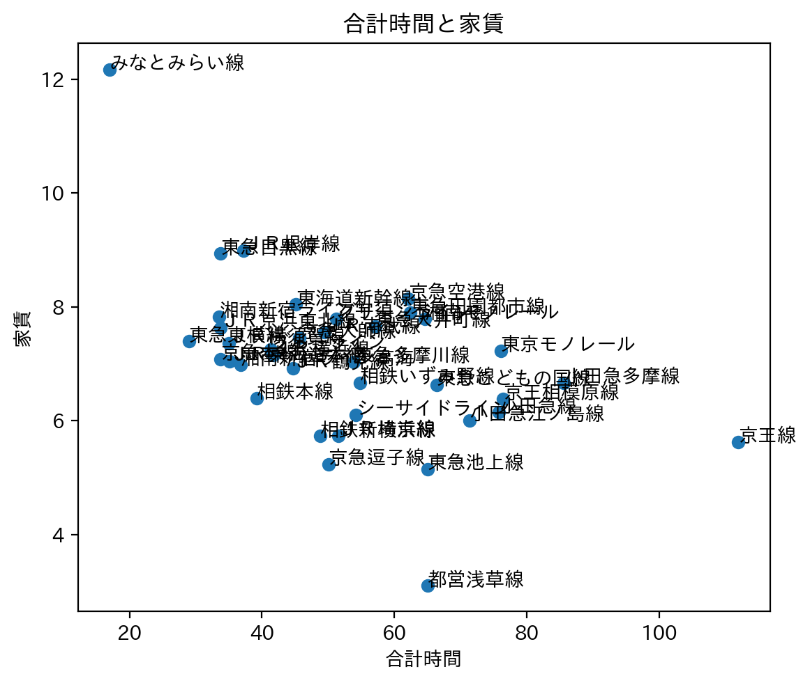
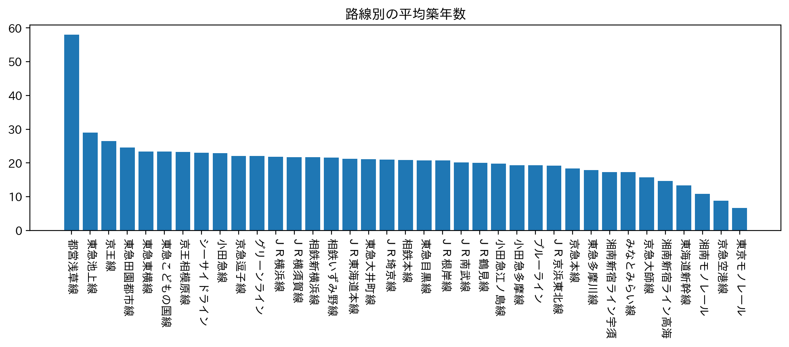

オススメの駅
ペルソナを家族で越してくる大学生と定義づけ。
家賃が高くても、駅に近く、便利な物件で考えた。
路線別の平均合計時間

まず、学校まで通いやすい路線を調べたところ、みなとみらい線が浮上。
面積と家賃

次に、暮らしやすさの観点から、面積のと家賃を調べたところ、家賃が高くても広いところとして、圧倒的にみなとみらい線が浮かび上がった。
合計時間と家賃
上記2つの要素から比較してみてもやはり群を抜いてみなとみらい線がピックアップされている。
路線別の平均築年数

このグラフから、比較的新しい物件が多く、暮らしやすいことが分かる。
みなとみらい線の駅別の平均家賃
みなとみらい線の駅で比べてみると新高島駅が家賃が高いことが伺える。また、みなとみらいキャンパスからも一番近い駅で通いやすい。
キャンパス周辺には、コンビニやショッピングモールも多数建設されており、比較的便利な物件が見つかる。
従って、私が神大生にオススメする駅は新高島駅である。
学び・感想
グラフを用いて、根拠立てて説明するのを一からやるのはとても単変だと感じた。
作成していただいた資料を提示してくださり感謝でいっぱいです。
今回の課題を通して、分析することの難しさと楽しさを学びました。
資料から、物件をピックアップして、特定するところまでが分からず、できなかったので、今後はできるようにしていきたいと感じた。